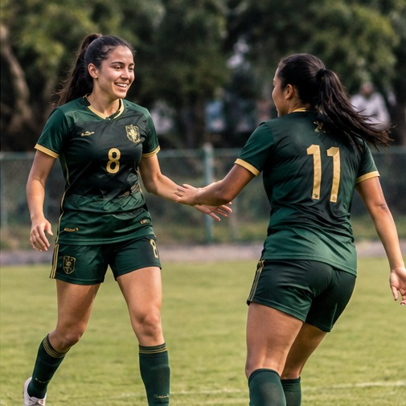
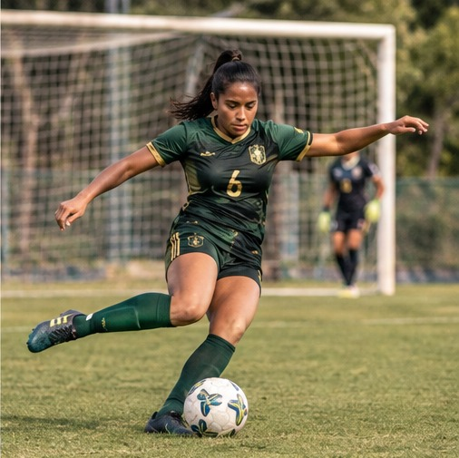
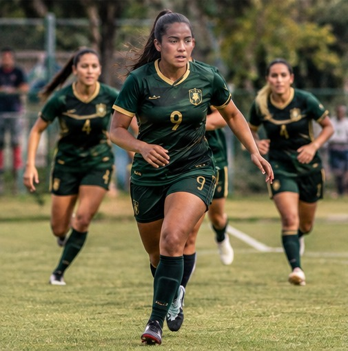
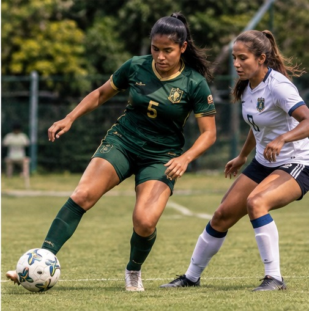
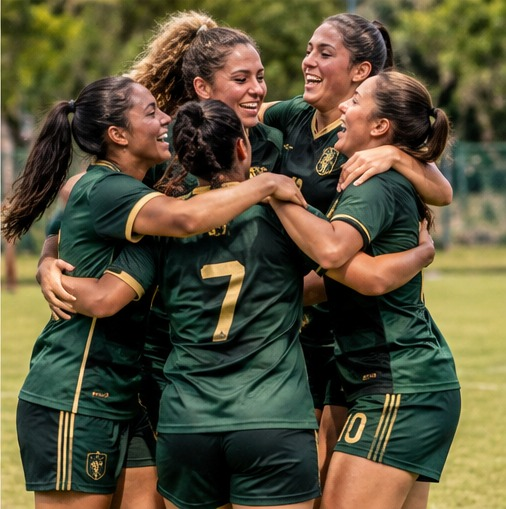

VIBRA FC es una propuesta de torneo recreativo de fútbol femenino en Cali.
Su concepto une deporte, entretenimiento, referentes deportivos y comunidad. La investigación de mercados que acompaña el proyecto busca orientar las decisiones de formato, convocatoria, logística y acción comercial.
VIBRA FC / EN LA CANCHA
Seis momentos. Una misma pasión.
El equipo vibra con identidad: verde bosque, detalles dorados y fútbol en movimiento.
01 · Dominio y determinación

02 · Compañerismo

03 · Precisión y potencia

04 · Juego colectivo

05 · Intensidad en cada jugada

06 · La fuerza del equipo
IDENTIDAD DEL EQUIPO
Fuerza, elegancia y pasión.
El escudo VIBRA FC representa liderazgo, unión y orgullo por el fútbol femenino. La identidad combina verde bosque, dorado y marfil.
Verde bosqueDoradoMarfilNegro
DOSSIER DE INVESTIGACIÓN · ESCUELA NACIONAL DEL DEPORTE
La investigación detrás de la vibra.
Informe de análisis y plan gerencial: fútbol femenino en Cali
Programa: Tecnología en Gestión DeportivaInstitución: Escuela Nacional del DeporteDocente: Ana Pilar MarínIntegrantes consignados: Paula Vargas, Juan David Rodríguez y Dilan Caicedo AntesMuestra declarada: N = 100
CAPÍTULO 01
Resumen ejecutivo y planteamiento del problema
El fútbol femenino ha ganado espacios de participación en Cali, pero existe una brecha entre la afición y la asistencia o participación efectiva en eventos recreativos. El problema gerencial consiste en evaluar la viabilidad de realizar un torneo recreativo que combine deporte, entretenimiento, influencers y futbolistas con trayectoria, definiendo su formato, logística y plan de acción comercial.
Oportunidad para VIBRA FC. Diseñar una experiencia deportiva atractiva y accesible que transforme el interés por el fútbol femenino en participación y asistencia reales.
CAPÍTULO 02
Objetivos y metodología
Objetivo gerencial derivado del problema
Evaluar la viabilidad de un torneo recreativo de fútbol femenino en Cali y definir decisiones de formato, logística y comercialización que respondan a las barreras de participación detectadas.
Objetivos específicos de trabajo
Describir el perfil etario del público considerado.
Identificar barreras que limitan la participación o asistencia.
Estimar la intención declarada de asistir y la influencia de referentes deportivos.
Traducir los hallazgos en estrategias de formato, comunicación y convocatoria.
Proponer un piloto operativo con presupuesto, cronograma e indicadores.
El informe original no enumera objetivos general y específicos de forma independiente. Los anteriores se formulan a partir del problema gerencial y de las variables que el documento sí declara; no se presentan como citas textuales del informe.
Diseño metodológico descrito
El informe caracteriza el ejercicio como un modelo cuantitativo descriptivo, procesado en Python. Declara 100 encuestas y señala como variables de análisis: rango de edad, barrera principal, intención de asistencia e influencia de referentes.
Procesamiento y alcance de los datos
El documento incluye un script de Python que importa pandas y numpy, fija una semilla aleatoria (42), establece n = 100 y genera registros con numpy.random.choice a partir de probabilidades predefinidas. Por tanto, el código visible genera datos simulados; no demuestra por sí solo que se hayan procesado 100 respuestas reales de encuestados. Las métricas deben tratarse como resultados ilustrativos del modelo hasta contrastarlas con la base original de formularios.
El informe no detalla marco muestral, método de selección, fechas de campo, cuestionario completo ni procedimiento de validación de respuestas. Estos elementos deben agregarse si existen soportes adicionales.
CAPÍTULO 03
Resultados principales del análisis
82%público menor de 35 años
3,71/5intención media de asistencia
3,87/5influencia media de referentes
68%calificó intención con 4 o 5
Perfil demográfico
El 82% se ubica por debajo de los 35 años. El rango de 18 a 24 años representa el 40%; 25 a 34 años, 23%; 15 a 17 años, 19%; 35 a 44 años, 10%; y 45 años o más, 8%.
18–24 años 40%
25–34 años 23%
15–17 años 19%
35–44 años 10%
45 años o más 8%
Barreras principales
El documento destaca falta de tiempo (30 respuestas), horarios no convenientes (18) y falta de información oportuna (25). En el script aparecen además distancia o transporte (15%) y costo (10%) como categorías probabilísticas; no se deben interpretar como conteos observados independientes sin la base real.
Falta de tiempo 30
Falta de información 25
Horarios no convenientes 18
Intención de asistencia e influencia de referentes
La intención promedio de asistencia se reporta en 3,71 sobre 5, con mediana de 4,00; el 68% asignó una puntuación de 4 o 5. La influencia de referentes se reporta en 3,87 sobre 5. El informe interpreta que influencers y jugadoras con trayectoria pueden elevar la convocatoria.
Análisis e interpretación gerencial
La concentración de público joven respalda priorizar Instagram y TikTok con contenido audiovisual dinámico.
El peso conjunto de falta de tiempo y horarios incómodos orienta a un formato corto, de fin de semana y de un solo día.
La falta de información exige comunicar anticipadamente ubicación, costos, fechas, formato e inscripción.
La valoración de referentes respalda explorar alianzas con futbolistas e influencers locales, midiendo su aporte real a registros y asistencia.
CAPÍTULO 04
Decisiones gerenciales estratégicas
A
Formatos flexibles
Diseñar un Festival Relámpago en fin de semana para responder a los problemas de tiempo y horarios.
B
Campañas transparentes
Difundir piezas directas con la oferta de valor completa e inscripciones abiertas desde el inicio.
C
Marketing de embajadoras
Confirmar alianzas estratégicas con jugadoras profesionales e influencers deportivas de Cali.
Aplicación a VIBRA FC: estas líneas deben reflejarse en la experiencia del evento, el calendario de contenidos, los mensajes de inscripción y las alianzas de difusión.
CAPÍTULO 05
Plan de acción y prueba piloto operativa
Presupuesto estimado del piloto · un día en Cali
Concepto
Costo estimado (COP)
Justificación operativa
Alquiler de canchas sintéticas (6 h)
$600.000–$900.000
Escenario céntrico y de fácil acceso en Cali.
Juzgamiento y logística
$400.000–$600.000
Árbitros, sonido y coordinación de campo.
Embajadoras / referentes
$500.000–$800.000
Incentivos y viáticos para influencers y jugadoras.
Pauta digital y piezas
$300.000–$500.000
Campañas geolocalizadas en Instagram y TikTok.
Premios e hidratación
$400.000–$600.000
Medallería, trofeos e hidratación de participantes.
Total estimado
$2.200.000–$3.400.000
Financiación prevista mediante inscripciones y patrocinadores.
Cronograma de ejecución · cuatro semanas
Semana 1 · Gestión de alianzasReserva del escenario y confirmación de embajadoras y futbolistas.
Semana 2 · Campaña digitalLanzamiento de pauta en redes y apertura de formularios de inscripción.
Semana 3 · Logística y cuadrosCierre de inscripciones, publicación de fixtures y coordinación de arbitraje.
Semana 4 · Ejecución y evaluaciónRealización del torneo piloto y encuesta de satisfacción posterior.
Indicadores clave de rendimiento (KPI)
>15%conversión de clics en inscripciones
8equipos inscritos como mínimo
120espectadores presenciales
>85%valoración positiva CSAT
Propuesta gerencial integrada para VIBRA FC
Se recomienda lanzar un piloto de un día en fin de semana, con sede de fácil acceso, inscripción sencilla y comunicación anticipada de todos los detalles. La campaña debe concentrarse en redes sociales de alta afinidad con el público joven y sumar embajadoras locales con contenido colaborativo. La operación debe presupuestar cancha, arbitraje, logística, difusión, premios e hidratación. Tras el evento, medir conversión, número de equipos, asistencia y satisfacción para decidir si se replica, ajusta o escala el torneo.
CAPÍTULO 06
Conclusiones y referencias
Conclusiones derivadas del informe
El proyecto identifica una oportunidad para acercar la afición al fútbol femenino a experiencias recreativas concretas en Cali.
La audiencia descrita es principalmente joven, por lo que la comunicación digital debe tener un papel central.
El tiempo, los horarios y la falta de información aparecen como barreras que el diseño del evento puede reducir.
La intención declarada de asistencia y la influencia de referentes son señales favorables para probar una convocatoria, aunque deben validarse con datos reales.
El Festival Relámpago, la comunicación transparente y las alianzas con embajadoras son las tres decisiones gerenciales centrales propuestas.
El piloto debe evaluarse con metas de conversión, equipos inscritos, espectadores y satisfacción antes de escalar.
Fuentes secundarias citadas en el documento
Ministerio del Deporte de Colombia (2024). Lineamientos de Equidad e Inclusión en el Deporte.
Federación Colombiana de Fútbol (2025). Reporte de Desarrollo del Fútbol Femenino.
FIFA (2023). Women's Football Strategy and Commercial Evolution.
La cancha nos une. La pasión nos mueve.
VIBRA FC · TORNEO RECREATIVO DE FÚTBOL FEMENINO · CALI, COLOMBIA